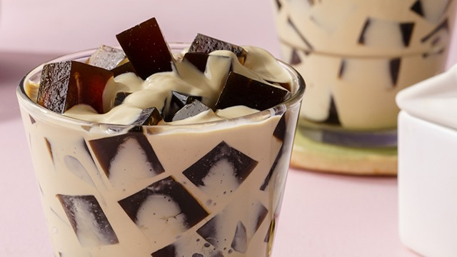

Coffee Jelly

Description
Coffee jelly is a coffee flavoured dessert with cube-sliced gelatin in a thick sweetened cream infused with coffee.
Ingredients
- 3 tablespoon of coffee
- 1 sachet of coffee flavoured gelatin
- 1 pack of 250 ml All purpose cream
- 1 can of condensed milk
- 2 cups of evaporated milk
- 2 cups of water
- sugar (optional)
Procedure
- In a pot add 2 tablespoon of coffee then pour the 1 packet of gelatin and 1 cup of water, stir until the gelatin dissolves
- Open the fire and stir continuously until it boils
- Trasfer the mixture in a rectangular baking pan and let it cooldown before refrigerating it for 2-3 hours or until completely set.
- In a large bowl, combine the 1 pack of all purpose cream, 1 can of condense milk, 2 cups of evaporated milk, 2 cups of water, and 1 tablespoon of coffee.
- Cut the gelatin into cubes and mix it with the sweetened cream mixture. Serve and Enjoy.